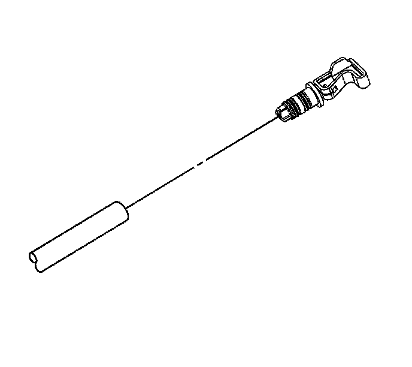
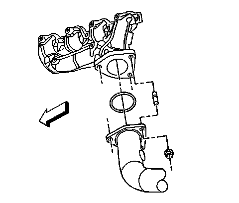
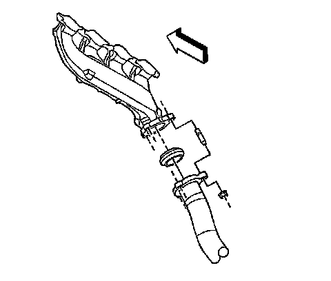
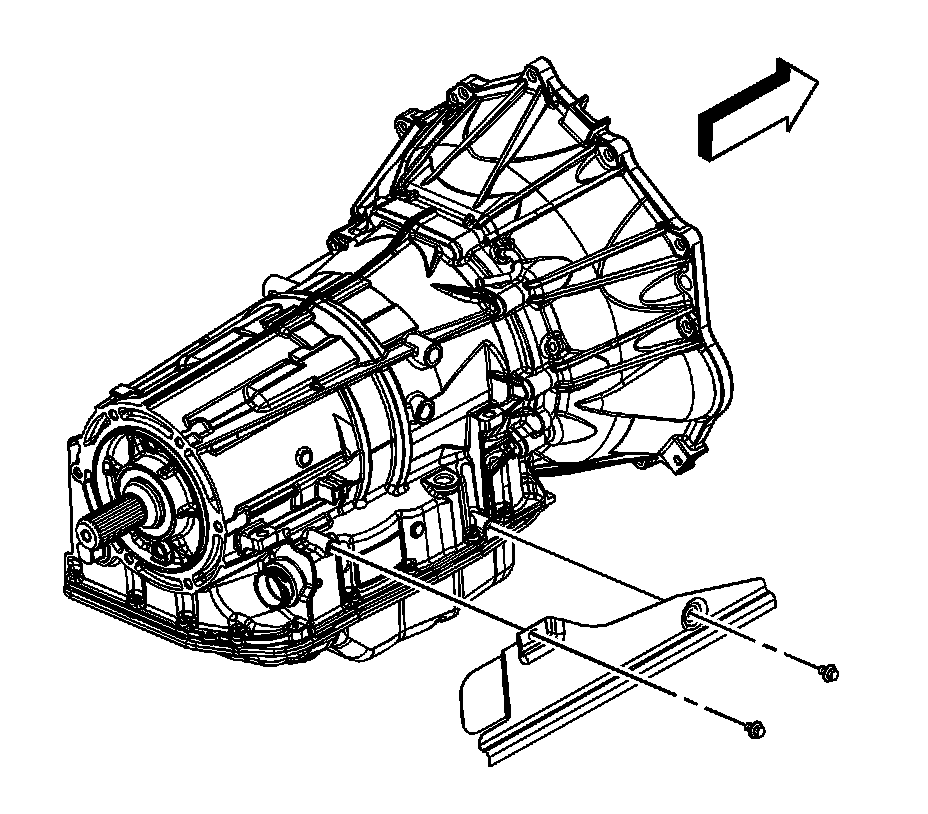
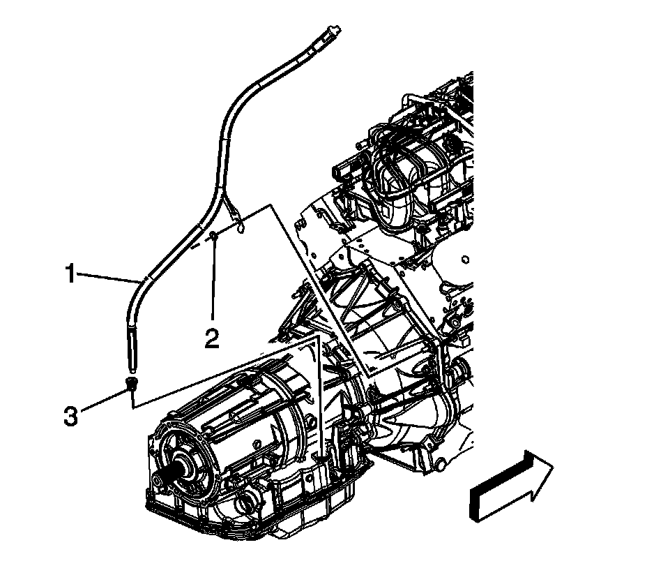

6L50/6L80/6L90 - Automatic Transmission
Filler Tube and Seal Replacement
Removal Procedure
1. Remove the intake manifold.

2. Unlock the transmission oil level indicator.
3. Remove the transmission oil level indicator.
4. Raise and suitably support the vehicle. Refer to Lifting and Jacking the Vehicle.
5. Support the transmission using a suitable jack.
6. Remove the transmission crossmember.

7. Loosen the left exhaust pipe nuts.

8. Loosen the right exhaust pipe nuts.

9. Remove the transmission heat shield.
10. Lower the transmission slightly.

11. Remove the indicator tube nut (2).
12. Remove the oil level indicator tube (1).
13. Remove the seal (3) from the transmission, if necessary.
Installation Procedure
1. Install a NEW seal (3) to the indicator tube.
2. Install the oil level indicator tube (1).
3. Install the indicator tube nut (2).
Tighten the nut to 18 N.m (13 lb ft).
4. Remove the transmission heat shield.
Tighten the bolts to 17 N.m (12 lb ft).
5. Tighten the right exhaust pipe nuts.
Tighten the nuts to 50 N.m (37 lb ft).
6. Tighten the left exhaust pipe nuts.
Tighten the nuts to 50 N.m (37 lb ft).
7. Install the transmission crossmember.
8. Remove the support from the transmission.
9. Lower the vehicle.
10. Install the transmission oil level indicator.
11. Lock the transmission oil level indicator.
12. Install the intake manifold.